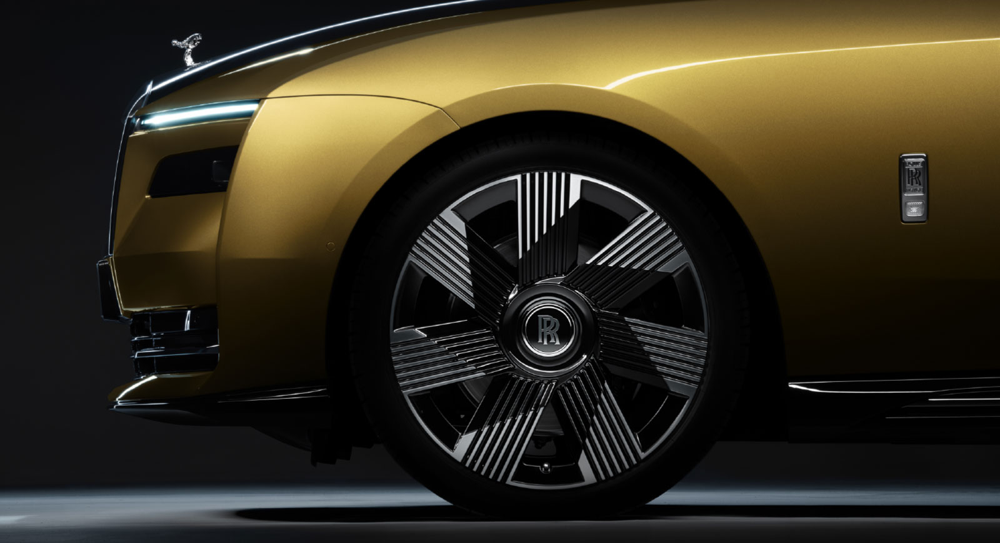

<!DOCTYPE html>
<html lang="ko">

<head>
    <meta charset="UTF-8">
    <meta http-equiv="X-UA-Compatible" content="IE=edge">
    <meta name="viewport" content="width=device-width, initial-scale=1.0">
    <title>rolls-royce</title>
    <link rel="stylesheet" href="./css/mainCss.css">
</head>

<body style="margin: 0 auto;">
    <!-- 해당 부분은 주석입니다. -->
    <!-- 주석은 코드에 적용되지 않으며 해당 코드에 대한 설명을 작성하는 용도입니다. -->
    <!-- 해당 주석을 보고 코드를 이해하시고 따라 하시면 됩니다. -->
    <navbar>
        <a href="./index.html"></a>
        <a href="./maserati.html"></a>
        <a href="./porsche.html"></a>
    </navbar>


    <!-- 첫 페이지에 떠있는 동영상입니다.-->
    <!-- 확작명이 mp4(동영상) 와 같은 동영상 파일의 경우 src안에 경로를 바꿔주세요. -->
    <!-- <video id="tag1" class="mainImg" src="./img/rollsRoyceMainImg.mp4" autoplay loop muted></video> -->
    <!-- jpg(이미지) 또는 gif(움짤)의 경우 아래의 코드에서 src를 수정 바랍니다.-->
    


    <!-- 글자 블럭 입니다. h1태그안에 있는 글자는 제목을 <p>태그 안에 있는것은 내용입니다. -->
    <div class="text" id="fade">
        <h1>현실이 된 예언. 전기화된 정신.</h1>
        <p>
            간결해진 환희의 여신상은 위풍당당한 모습으로 SPECTRE를 리드합니다. 우리의 아키텍처 오브 럭셔리를 기반으로 만들어진 SPECTRE는 지금까지 중 가장 강력하고 가장 공기 역학적인 롤스로이스로, 
            차체의 모든 라인은 궁극의 우아함과 퍼포먼스를 위해 그려졌습니다. 마음을 사로잡는 주행 경험. 그 무엇과도 비교할 수 없는 럭셔리의 기준.
        </p>
    </div>


    <div style="height: 500px;"></div>


    <!-- 글자 블럭 입니다. h1태그안에 있는 글자는 제목을 <p>태그 안에 있는것은 내용입니다. -->
    <div class="text" id="fade">
        <h1>자연스러운 퍼포먼스. 선구적인 정신. 럭셔리의 새로운 표현</h1>
        <p>
            SPECTRE는 롤스로이스가 2030년까지 전 모델 포트폴리오를 전기화 시키는 새로운 전기의 세계로 선두의 위치에서 들어갈 수 있게 해 줍니다. 
            선구적인 디자인은 시간이 지나도 변치 않을 아이콘을 재창조함으로써 롤스로이스의 순수 전기 시대를 향한 명확한 길을 열어줍니다.
        </p>
    </div>

    <!-- class="imgText" 로 감싸져 있는 블럭은 이미지와 글짜를 나란히 배치 시킵니다. -->
    <div class="imgText" id="fade">
        <!-- 아래의 이미지 태그 밑에 src 값을 변경해주어 이미지를 변경이 가능합니다. -->
        
        <div style="margin: 3%;">
            <!-- 아래의 h2 태그안에 있는 글자릅 바꾸어 소제목 변경이 가능합니다. -->
            <h2>아이코닉한 헤드라이트</h2>
            <!-- 아래의 p 태그안에 있는 글자를 바꾸어 해당 블럭의 설명글을 변경이 가능합니다. -->
            <p>롤스로이스의 아이코닉한 분리된 헤드라이트는 SPECTRE의 영혼적 전신이라 할 수 있는 팬텀 쿠페 이후에는 볼 수 없었습니다. SPECTRE는 상부의 주간주행등과 앞 길을 환하게 비춰주는
                하부의 4-램프 클러스터, 이 2가지 요소로 독창적이고 시선을 사로잡는 디자인을 이어가고 있습니다.</p>
        </div>
    </div>

    <!-- 위의 블럭과 동일하나 이미지와 설명에 대한 글의 위치를 바꾸었습니다. -->
    <div class="imgText" id="fade">
        <div style="margin: 3%;">
            <h2>멋진 휠</h2>
            <p>SPECTRE의 기초가 되는 비스포크 알루미늄 스페이스 프레임인 아키텍처 오브 럭셔리에는 이제 23인치 휠이 최초로 적용됩니다. 그 결과, 
                미적인 관점에서나 성능적인 관점에서 놀라운 효과를 가져옵니다. 빙판길이나 눈 덮인 도로에서도 윈터 타이어와 결합된 이 휠은 주행의 즐거움을 선사합니다.</p>
        </div>
        
    </div>

    <a href="#tag1"><h1>최상단으로 이동하기</h1></a>
</body>

<script src="./js/mainjs.js"></script>

</html>